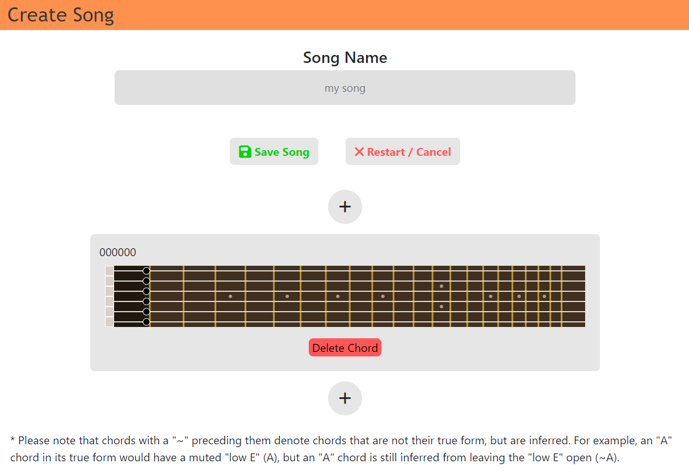

Info
Motivation
Chordless is a web application I developed for guitar players,
specifically those who are at a begginer / intermediate level (Though
it has it's applications for advanced players too).
I have been playing guitar for 5 years and as I look back one of the
most frustrating things starting out was remembering the vast amount
of chord names and even worse, their shapes. After learning the
basics, I would find myself experimenting across the fretboard,
creating sounds and progressions that sounded good to me. However,
recording these turned out to be a nightmare. I would spend most of my
time either A. recording the guitar as I played to then watch to
remember the shapes or B. Drawing out what the shapes and chords
looked like all up and down the fretboard down to the last note. I
even tried memorizing tons of chord shapes and names so I could just
write them out, but this became an issue when either A. new chords
were introduced, or B. I played an abnormal shape that didn't map well
to a common chord.
I was frustrated with this process, and felt I was limited because of
it. It inspired me to create this app. You are presented with a full
fretboard editor that looks just like your guitar! Simply click on the
strings you play and it will not only save the exact visual of what
you are playing but will also try to map it to a chord name! When you
are done, you can view the entire song and effortlessly play!
The create song display:

The Stack
On the technical side of things, the application uses React with
TypeScript for the client side code, node.js for the api, and express
for the middleware / server. The database is a SQL database called
PostgreSQL.
have experience developing personal projects in React JS and vanilla
JS, but overall have has better experiences through internships and
work experience using TypeScript, so I decided to go with this for the
application. Overall, though I enjoy programming in both, I prefer
TypeScript to JavaScript. Debugging is made more straightforward, the
readability of the code is much improved, and I think it looks a lot
more professional.
For the backend, I still used JS as it just made it simpler for me
personally. However, I would be open to look into implementing TS for
the backend code as well. For the server, I used Express which has
been pretty standard and reliable across all of my projects.
As for the database, I had used MongoDB for the past few projects so I
decided to get some experience with an SQL database. The Postgres DB
was certainly strict in terms of how I queried and how I constructed
tables and input data. It wasn't as simple as MongoDB which used json
objects that could be directly loaded into the model and saved.
However, tools like "Sequelize" helped tremendously in simplifying
things. Overall, I would say I still prefer MongoDBs simplicty over
Postgres, but I do think that for certain projects, structuring the
database with a SQL database makes more sense. In my case, I think I
could have gone either way. One major drawback to Postgres that I
found was the availablity of a free hosting solution. With Mongo, you
could host it on the cloud for free, but with Postgres I had to search
for something that fit my need, and ultimately even the best options
had serious drawbacks.
Deployment / Hosting
I found the best way (for starters) to deploy for a smaller app like
mine was to use render.com. render.com is a great solution for
developers who want to get there app deployed, but are not ready to
commit to a serious (potentially expensive) hosting solution.
onrender.com will host both a static website and web services for
you... free of charge! Of course, with any free solution there is a
catch! Lucky for us it is NOT one that requires us to spend money.
However, you will notice in order to save resources they will not keep
your web service up at all times if it has gone "idle" for a certain
amount of time. This is annoying only because if you are the only user
making api requests on the website, if you go idle for some time and
try to the make a request, the web service might be have to restart
thus resulting in a very annoying lag.
Another issue is that render.com will give you a subdomain under
"render.com" which is listed in the Public Suffix List (PSL). Due to
this, sending cookies between your webservice / static site will NOT
work. Luckily, render makes it easy for you to connect your own
domain! A domain costs about $12 / year and I HIGHLY reccomend using
Google Domains (which is what I used). They are simple and reliable
and offer super straightforward DNS configuaration. You can simply
purchase a domain you like for example "myexamplesite.xyz". Then,
create two subdomains "app.myexamplesite.xyz" and
"api.myexamplesite.xyz" connect them to their respective service and
BAM - You can now send cookies between the two!
As for the database, I went with Neon's free tier. They offer up to
100 hours / month of Active Time, which is the amount of wall-clock
time the compute endpoints are open. Basically, the compute endpoints
will open everytime you make query and stay open until no queries have
been made for ~5 minutes. This is obviously not ideal. In the future,
if I plan to market the application and gain a user base, I would
definitely have to upgrade as 100 hours of open endpoints is only like
4 days. For just personal use and sharing with family, friends, and
friends-of-friends, this works just fine.
Wrapping Up
Overall, this is one of my favorite projects. I am extremely satified
with the result, and I also feel like I gained a ton of really good
experience. I spent many, MANY hours figuring everything out and now
feel like I have a really solid grasp on creating an application from
start to finish. Not only this, I feel that I learned a ton from
online resources, tutorials, and blogs when it came to best practices
and terminology. I feel like this project really allowed me to fill in
any knowdledge gaps I had from work. I plan to keep updating this
project and adding features to it. I am also planning a v2 deployment
which I will attempt to open the app up to users and include a mobile
version. However, my full on development of the application has come
to an end with the v1 release, and I look forward to new and exciting
projects in the future!